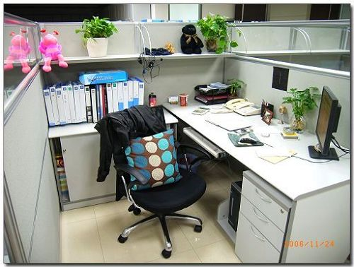
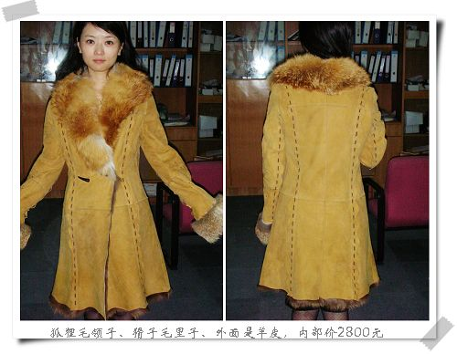
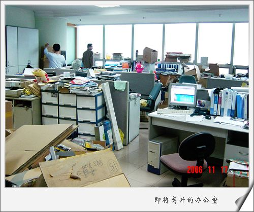
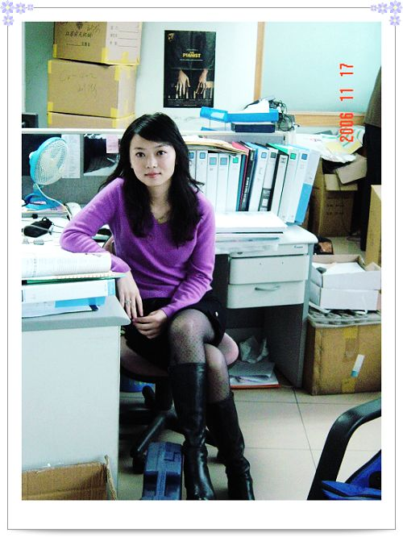
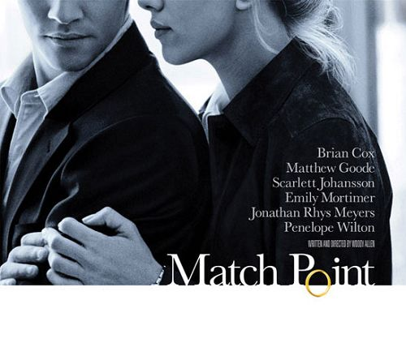

Archives : 2006-11
傍晚．小雨 @ Nov 29, 2006
几次路过北京西路，才发现马路两边的银杏树已经灿黄灿黄，叶子被雨水和风打落在地，汽车驶过又被纷乱的扬起随地散落下来，不知道从什么时候开始银杏叶子黄的季节我总是不经意地拿着相机跑去东郊拍照，这一年被雨天耽误了，入冬后南京百年不遇的雨天，持续下了两周左右的时间。过了11月，灿黄的银杏叶是否还会为我等待？
好长时间心思心情变得平淡无奇，象周围的人们一样过着看似井然有序的生活，吃喝拉撒睡，看碟子、听音乐、越过文字翻看带着图片的杂志、驾驶车东奔西窜......每个人的生活都是这样的，是吗？下周一是同事的婚礼，本以为他会折腾几年，没想到还是闪电般结婚了。再怎么游戏人生，还是逃不出上苍安排的路线，结婚之后紧接着生孩子，然后养育孩子长大成人，选学校找工作等等诸如此类的生活内容，一步一步按照程序进行着。每天上下班，晚上和家人一起吃饭，或者出去约会看个电影什么的。周末睡懒觉，打扫卫生收拾家务，逛街，约朋友见见面，或者加班。有人说简单的生活就是一种幸福。回顾一下这段平淡无奇的日子，这种按照程序进行的生活就是简单的生活？简单就是是幸福。这个逻辑应该没有错，是吗？所以，我...幸福...
晚上下班在家门口停下来，关灯熄火后，忽然有些心慌，原因有可能是消费过于奢华？整日没有追求？还是对于自己的生活目标力不从心？我又想到简单就是幸福的观点，我想到我的经理，他现在一个人坐在一间46平米的办公室里，全家收入都来自于他，公司几乎事无巨细他多少都要照顾到，40岁出头头发已经花白，他给我的印象就是一个任劳任怨的劳模，从他身上我学到不少为人处世的技巧，这对我个人帮助不少。他的全职太太管理家务和孩子，每年公司组织旅行或聚餐时会出现一两次。大多数家庭从表面上看都是很幸福的，经理一家应该也是吧。这样的生活够简单吧，那么以上面的观点推断也应该够幸福......
有个同事的MSN签名很有意思，大致是“不成熟的男人可以为了事业勇敢的去死，而成熟的男人可以为了生活苟且地活着。”网站上另一个签名更是出乎意料的有趣“真正的男人就应该象金刚一样，站在大厦顶上为心爱的女人打飞机。”曾记得有句歌词:你打开一扇窗,你就看到那样的风景;你爱上一个人,你就有着那样的命运...

朝九晚五 @ Nov 27, 2006
俺们现在真的是朝九晚五的作息时间了，偌大的办公室其实吵得要命，不适应...
新办公室 @ Nov 24, 2006
昨天晚上搬进新办公室，这里的办公条件自然比之前的要好许多，只是上班的时间与路程都增加了一倍，从家开到公司20多分钟，13公里，今早上高架上遇上堵车，如果顺利的话时间还可以缩短一些。公司停车也方便许多，总之，现在可以随便停了。周围交通也比较好。良好的办公环境会促使人有工作的欲望和热情！



吃板栗的季节 @ Nov 22, 2006


终于要搬家了 @ Nov 22, 2006
明天晚上终于可以搬家了，前天有消息称那里的网线和电话线都没好，办公椅也没有，公司一半人过去了，一半在原办公室。最幸运的是打卡机被拆走，这周上班不用再去按那个该死的指纹打卡机：）好多同事愁着怎么乘车，对于开车上班的人还是不错的，那边道路宽敞，交通比较通畅，不过公司周围没见什么小吃餐饮店。我打算明天中午把电脑拆了，下午带到新办公室装起来。从来没进去看过新办公室，不知道怎么样哦？
今天同事收拾东西，发现好多年前的照片，有个女同事现在40多岁，十年前33岁，那时的她好时髦的，穿着羊毛白底黑花套裙，束着宽腰带；有张合影穿了件粉红色长风衣，梳着当时流行的蘑菇头...十年过得可真快，不由得想象起我40岁的摸样来。包括这次公司搬了三次，虽然东西没家庭搬迁那么多，个人垃圾还是不少的。收垃圾的叔叔阿姨乐开了花。有些样品连包装都没拆就被扔了...浪费！我收了不少样品送给看车库的大姐们，自己留了些家用。以前向别人要什么玩具拉围巾帽子手套的样品，认为人家做这个的，拿几件样品给你肯定很方便，现在我才了解给人家找样品，从办公室带出去，然后送到人家手里，这个过程真的很麻烦。如果向你要的不止一两个人的话，那就更麻烦了。给的少不好看，从公司拿出去很多又怪怪的。所以以后不轻易向朋友要样品了！
我用所有报答爱 @ Nov 21, 2006
《我用所有报答爱》 －《夜宴》主题曲MP3
只为一支歌，血溅最深的寂寞；
只为一场梦，摔碎了山河；
只为一颗心，爱到分离才相遇；
只为一滴泪，模糊了恩仇；
我用所有报答爱，
命断在归途里，
岁月从此一刀两断，
永不见风雨。
无题 @ Nov 21, 2006

某种情绪的发生有时来自于期待，可是为什么要期待？如果一切可以招之即来挥之即去，任何事情都可拿得起放得下，那么这个冷漠的反问将令我失去对某些事物的热情和关心。
上周无意翻到一个台正在播《阿Q正传》，极老的电影。那天特别有兴趣的看到电影结束，温习了阿Q精神之后，我在想是不是也要拥有一个到死都不知道怎么死的人生？
女人不再沉默！ @ Nov 20, 2006
中国无耻的男人岂止是在娱乐圈，睁开眼睛看看我们的周围。肮脏不只在交易里，也存在于所谓的情感中，那么，只能用看似冠冕堂皇的两个字“伤害”作为结局。人心是我们最想把握的却是最难把握的！
点击:张钰的BLOG
出口外贸皮草 @ Nov 17, 2006
市场价格要乘以4哦~~



迁址 @ Nov 17, 2006
公司最终还是挪到下周三搬家，本来这个周末就要搬的。这几天办公室里乱七八糟，不过平时好象也没见整洁过哦？小强到处窜，不要的东西全当废品卖，大家互通有无交换样品，偶乘机罗列了一包玩具，也送出去不少样品，有些品质很好的样品也扔，真TM浪费！
真希望新办公室和干净有调理的同事坐一起办公。有的人东西特别多，桌子上堆满了文件，好象从来没见收拾过，他坐的地方几乎只能放下一双脚，可见多么日理万机！办公室除了东西多，小强品种尺寸也很丰富哦，常常边吃早餐边用餐巾纸在桌子周围捏小强，时常也能听见同事大呵一声，接着“啪”一下，习惯了之后已经没有人抬头问发生了什么。




聪明VS真实 @ Nov 17, 2006
有个海归的同事要结婚了，婚礼定在12月份，太太是艺术学院毕业的，没有找工作，在家里教学生弹钢琴。认识半年后领证。昨天听那同事讲，他给太太办了张信用卡的附卡，一个月被刷掉5万元，邻居家说他太太可以把整个金鹰搬回家了。当然结婚花钱是肯定的，可一个月刷5万还是很难想象的，尤其是只为自己买东西。毕竟花钱快挣钱慢。不由让人感叹我怎么就没有享受过这种附卡待遇呢？听同事讲已经没收了太太的附卡。其实花自己帐户里的钱总比花人家的钱落得轻松自在，不是吗？
同事们议论此事，有个男人说：“人家LP温柔，海龟同事出去玩，那太太从来不追不管，你看多好...”
听完这话我的第一反应是她并不那么爱他！
接着我问道：“男人到底需要聪明省事的太太，还是真实的爱他的太太？”有人说男人喜欢二者兼顾的太太，可是男人自己是不是也能如此完美呢？
健康宝典 @ Nov 15, 2006
有个电视节目叫《健康宝典》，有关心理生理卫生的讨论，会请嘉宾，精神分析师、医生来现场做客，昨晚的宝典尤其是观众...感觉象是艺术学院的学生，放眼望去气质不错的多。这期话题有关“梦”的，解释人为什么会做梦。我常常做梦，所以特别认真的听了听。精神分析师说人的脑电波呈周期性交替活动，做梦时人的眼皮会动，脑波呈剧烈活动期，这是做实验的医生叫醒受试者问他是不是做梦了，受试者说是的。有人认为晚上没做梦，其实他是在脑电波的平缓期醒来所以不记得自己做梦了。每个人晚上都做梦，有人记得有人不记得，就看你在什么周期阶段醒来。
想要睡个好觉，节目中建议在睡前哼歌、做做舒展运动，保持好心情入眠。还交了两套按摩操来帮助提高睡眠质量。分析师认为梦是自己的一笔资源，比如梦见好的旋律，好的段子，好的情景，不记录下来浪费，分析师建议把每天记得的梦记录下来，可以帮助认识自己，保存资源。人们越来越关注心理卫生健康，令人欣慰！
办公室最冷的季节 @ Nov 14, 2006
这是办公室最冷的季节，大厦的中央空调要到零下才会开，每每这个时候我都觉得特别冷。外面虽然阳光很充足，可是办公室里却一点都不温暖，尤其今天，脚趾头能感觉到袭人的冷气。放张春天的鲜花增加点气氛吧！

开会通知这个周末要整理好个人文件和物品，打包编号写上自己的姓名，周末两天搬家公司帮我们搬到新办公地址。可是听说家具还没进去，不知道是否能够顺利进行。几次开车路过新办公区，门头上的字还还蒙着白色的封条。集团买下这块地，盖了几处办公大楼，外面看上去既象制衣厂又似医药车间，想必里面一定实用无比。只是拍板最终设计施工稿的人审美实在不敢恭维。最关心的是停车费，整个地下停车场给我们公司90几个车位，开始说要140元/月/辆，领导建议在80元/月/辆，昨天中午听说最新消息“免费”停车。
说到停车，想起这段时间我一直把车停在大院里，先前管理车库的阿姨们对我也面熟了，一般会让我把车停在过道边上，总之停几天就搬了。开始我停在前院，保安问我要钱我也给。有一天一个保安问我要名片，我问他要名片干什么？他说你们新办公区需要保安吗？我说这事应该找那里的物管，况且用保安也是和保安公司联系。他马上说没事的时候去找你...见我没搭他话茬，接着又补充道：“车停这里如果需要挪位置我好打电话给你吧。”我未置可否的就离开了，听他这话跟吃了只苍蝇似的，为什么有的人就这么不上路子呢？自那以后我都停在过道边上去了。
想到前后有关停车的事情，要么费神要么费财，为什么？
先说费神：在住宅小区停车，看车的老头每天早晨见到我的第一句话肯定是：“把车位给你停了，包月的车还没来呢。”不然就是“我都不想给你们停车了，其他车都停不了。”如果早晨心情好听他唠叨还能忍受，要是早晨心情平平听他唠叨那效果...看见了吗？象这种手上有1%小权利的国人一般都会充分使用。偶为了每月节约200元停车费天天早晨受这份罪。费神的第二则原因就是上面提到的类似保安的问题；
费财：停车其实是应该重视的事情。我同事的车停在旧式小区的过道边，早晨起来天窗被凿了个洞，一面窗户被砸。我的车被人撬锁，自己花了2850换了整套锁，算算可以停在正规停车场多少次哦？始终觉得宁愿多花点钱也不愿意糟那份人情罪。今早看车库的阿姨问我要样品了...钱的事情好解决，人情债难还，即使你已经花了钱也一样！
有感对章子怡的不满 @ Nov 13, 2006
早晨到办公室手里拿着早点边吃边打开喜欢的几个BLOG，发现点开的清一色是女博客，难道女人到了一定年龄阶段关注同性更多？洪晃的页子里置顶章子怡，上面写道“我这几天纳闷，这外国人天天挑中国的刺，什么污染啊，贪官的，就一章子怡，还给中国人争口气，我们自己媒体怎么非跟她过意不去。不知情地就被忽悠着，没辙；这知情的，可真是觉得她冤,更得顶她一下！”有时会和周围男士谈论到章子怡，大部分都是不屑的表情，不仅如此还要表示如何的厌恶...我对他们的反应一直都疑惑，我本人很喜欢章子怡，她身上有股坚韧的劲儿，工作努力也很有审美，这与她之前进行过多年的舞蹈训练不可分。
有关对章子怡不满情绪的产生，我粗略归纳了以下原因：
1、她和成龙拍电影那段儿，香港媒体对她总是进行负面报道给我留下了深刻印象。只要善良的有些良知的人都可以分辨出这些文字中的某种情绪！娱记的架势简直就跟听见门外狗叫就要趴墙头的村妇无异。有些记者不是进行真实记录报道，而象个主观+想象+恶意的“长舌妇”般刻意混淆、引导公众的认知。有的记者嘴巴上讲得头头是道，貌似公正合理，行为上跟流氓没区别，见过名校新闻系毕业的，见过国家某机构的新闻编辑，见过讲话吊而郎当的...有些真令人鄙夷、鄙视！这些媒体从业者如何能担当一个严谨真实的新闻传播者？如果记者可以这么做，那不如从街头巷尾找几个中老年妇女当娱记更充分发挥人家所长。
2、美丽的女性会受到公众更多关注，一个美丽的女性走向成功之路比同行人稍微顺利些、速度快了点，一定会遭人妒忌，甚至招人诽谤。对于男性，女人美丽是可以的也是可以被男性所利用的，但美丽的同时还很努力并且成功了，那简直是对男性群体自尊心的伤害。
3、在章子怡国际知名度不断提高，身价不断翻翻的状况下，有些人是不是也具有“仇富心理”存在呢？报纸上曾经报道刘晓庆说象章子怡这种女孩子大陆多得是，殊不知match point的运气此时占了主要因素，可是这种运气不会一直有，没有实力打到最后，如何会有match point出现？难道实力是靠运气撑过半场的？
4、萝卜青菜各有所爱，喜欢不喜欢没有理由。我每每看见毕福剑就满腑不舒服，他那种做作出来的所谓幽默令人浑身起鸡皮疙瘩。还好，我不是记者，不然保不准把老毕传播成啥样呢！
姜丰的BLOG @ Nov 10, 2006
今天无意中找到姜丰的BLOG，这个我曾经喜欢的主持人居然在剑桥读研，还嫁了个外国人。其实就是喜欢她这个人，与她是否从事过正大综艺节目主持人无关。最近工作忽然空闲地不行，偷偷在电脑上逐一将她的BLOG一一阅读，她还真有东北人的那股率真劲，虽然婆婆妈妈什么都写，可是字句都是透着生活的真实感受，不矫情。尤其看到一篇《去，还是不去》中写道：“His money is our money, my money is mine.”呵呵，大多女人都这么想吧，我也这么想的，可是真正的自己还是自尊心太强，不能做的彻底。
姜丰和她的丈夫小里

姜丰的微笑还是那么甜美，只是她穿衣品味仍然残留着东北人的风格，没什么太多变化。不过这种状况一是绝对自信，不需要外过多修饰；二则真是的想打扮不知道怎么打扮。用姜丰的话讲：“在剑桥过得啥牌子都早无用武之地。一想，亚洲人、尤其是那些商场和酒店里的人比较势利（等着挨大板砖,ouch!），...”姜丰算钱也特有意思，人家一点不扭捏，大大方方的将小私心暴露出来...我觉得特羡慕，女人还是应该活得“柔弱”一些好，干吗自己和自己过不去呢？姜丰今年好象出版了新书《飞一样飞》， 是关于毕业十年的，有点怀旧。
休假一天 @ Nov 09, 2006
昨天用了一天休假在家休息，吃了两次药，早前广播里说从今年年底到第二年的三月间是禽流感、人流感高发期，也有可能两种流感交叉感染，这时候感冒让人怀疑自己是不是中奖了？一感冒有同事说你终于感冒啦，难得见你感冒的。我旁边的家伙经常感冒，而我坐在他附近很少受感染，想必这次是跳舞热了之后又受凉所致。
在家休息的时候搜索了伍迪.艾伦所有电影作品，如果可能准备按照这个明细购买。
有人提到罗红的BLOG，看完后感悟有钱真TMD好，可以N次前往非洲旅行，租飞机航拍，办个人影展还能募捐到70多万元...有钱能做很多事儿，做很多别人做不到的事情...光是摄影花在相机上的钱就不会是小数目，养马、旅行的开支呢？早几年就听说北京开始流行养马，在郊外专门雇人养，主人周末去转转，骑两圈。还是感悟，有钱尝试什么都可以~~没钱寸步难行。做个选择：1、拥有很多钱，但是生活的不愉快；2、没钱，过普通日子，生活愉快。你会怎么选择？有人说看完《鸡犬不宁》，得出“夫妻没有恩爱”的结论，除了那对老年再婚的夫妻，其余三对都不安宁...
立冬 @ Nov 07, 2006
立冬时间：公历11月7日，农历九月十七。
秋尽冬来，我患了感冒，外套下面须加件薄薄的毛衣。从立冬这天开始白天变短，夜晚将变得很长...很多人都知道立冬后应该进补，但由于地理环境各异，人们进补的食物是不同的。冬季西北地区宜进补温热之品，如牛、羊、狗肉等；而长江以南地区虽已入冬，但气温较西北地区要温和得多，进补应以平补为主，可是适当增加鸡、鸭、鱼类。路两边的树叶开始泛黄，这个月是我姐姐的生日，计划找个周末帮她拍些照片。
冬立这天知道网络上有的下载《鸡犬不宁》了，一直期待观看这部片子！早先在电影院看《宝贝计划》时看到它的预告片，剧情挺大胆幽默，开始以为是搞笑做怪的什么广告，后来明白是新电影的预告。听说这部和《疯狂石头》一样属于刘德华等股东投资的3000万中的十部电影之一，都是小成本制作（300万是小成本吗？）。这个事情联想起每周一天津电视台有个“无敌星工场”的节目，给不是科班出生的人一个表演机会，有些人的表演比大腕们的精彩许多。看多名导演的所谓大片，看腻了老面孔的表演，对这类作品还是很期待的，据说《疯狂石头》净赚好几倍，希望这部电影也能有丰厚的收益。
《match point》 @ Nov 07, 2006
赛点指网球赛最后一局的局点，拿下此球就赢下全局，否则就得再战。
当一个人参透了生命中更重要的是运气而不是实力的时候，就参透了人生。

官方网站：http://www.dreamworks.com/MatchPoint
电影的开头就是网球比赛中常见的一幕,球击到网口边缘,是落在对方场地还是弹回来,这时就是听天由命了,如果是在赛点时出现这种情况,就更加显得运气在这前后几公分微小差距中的巨大作用。，“赛点”的意思就是一局比赛中还差一球就赢下这一局。 "There are moments in a match when the ball hits the top of the net, and for a split second it can either go forward or fall back. With a little luck, it goes forword and you win. Or maybe it doesn't, and you lose."
21岁的斯嘉丽·约翰森是好莱坞近两年人气急升的少女明星之一，我从《迷失东京》中认识她，她的身材真是无与伦比的性感，演绎的形象令人难忘！从那部电影开始比较关注这个演员。男主角是爱尔兰人，我对他并不很熟悉。据说他拒绝与恶俗电影同流合污，只出演自己喜欢的角色，比如《纸醉金迷》、《圣师复仇》和《与魔共骑》。片中大量英国演员表演精湛，英式发音给我们这些看多了美国片的人带来一丝新鲜空气。
这部电影可以看出Woody Allen的深厚功利，不乏黑色幽默。爱情与婚姻，世俗功利与真实自我的斗争与挣扎。这个故事中，男女主角都在拿自己做赌注，就看运气如何了！唯一有趣的，是“运气”的概念。运气好，即使你杀人，但也会因为阴错阳差，而让你平安脱困，拥有财富与完美的家庭。运气不好，那就可能身败名裂。这一切，无关你是否是个良善的好人。去他的传统价值！如果要照所有的道德标准，那就不是Woody Allen了。
英俊的Chris通过英国上层社会追捧的网球运动成功的上位。他聪明，谦逊，恭顺，从不僭越……但事实上在这彬彬有礼的躯壳中潜藏着对于名利狂放的渴求。面对Nola他有些动摇，可以看出他对Nola炙热的情感在富豪兄妹不注意时强烈释放。Nola美的慑人心魄，性感绝伦，但他是Tom的未婚妻。他那能使他过上舒适生活的富豪女友Chloe是Tom的妹妹。注定的悲剧。
影片的表达细腻而不拖沓。没有过多渲染，在平和的叙述中体现暗潮汹涌。特别喜欢的一场戏：当Chris得知Tom和Nola邀请他和Chloe晚上看电影而Chloe拒绝后显得很焦躁，他好想见到Nola，不能明说，又不愿表现出来自己很想去看电影，于是反复的试探，与Chloe的拉锯战。其实还有很多场景处理的都很好，比较侧重细节刻画。
古典歌剧的穿插映衬使得整个影片风格和节奏显得如此独特。即便是凶杀场面的配乐也不例外，没有毛骨悚然，依旧是歌剧，只不过更赋悲剧色彩。
功利的婚姻注定会有外遇发生。重新归来的Nola使得Chris心猿意马，对家庭和妻子心不在焉。在怀孕的问题上Chloe很坚持，而在此时Nola怀孕了。母性的缘故，Nola想要独占Chris，想有稳定的家庭，这威胁到Chris的利益，使得Chris很是不安，他向朋友倾诉：在Chloe身边我可以过上安逸的生活，名利、金钱、地位，而离婚后我将失去一切，我做什么？到哪里去？怎么生活？当爱情碰撞名利，其下场必定是粉身碎骨。Nola把爱给了一个野心勃勃之人，她付出了生命的代价，连同她的孩子.
真讽刺，是Chris赢了。在他消毁赃物时扔的一枚戒指......就像影片开头那个在网上弹了一下的网球一样，戒指在栏杆上弹了一下，最终弹了回来，落在地上。命运就像一只魔手，这只没有过“网”的戒指就像是命运的最后一步棋，一个赛点，也是警方一个线索，一个吸食毒品的人捡到这枚戒指，并在凌晨的枪战中被打死了，警察在他的口袋里发现这枚戒指化解了警察对于Chris的猜疑。
新的一天，Chris的老婆生了一个儿子，全家庆祝。然后电影结束了，没有传统意义上的道德审判。这就是生活，这就是人性。但想想，事后的长久的噩梦和对自己良心无休止的拷问与谴责是一种更加残忍的惩罚。
《赛末点》很成功地塑造了一个不惜违反道德混迹上流社会的典型。影片中说：“我情愿做个幸运儿，而不是优等生。”这才叫看透生活的本质。人们怯于直面这样的现实：生活中纯粹靠运气的事情很多，有许多事情自己不能左右，那是令人无奈的人生。看完这部片子，也不由想起梅婷主演的《阿司匹林》，在人生道路上我们究竟该如何抉择？
You lose the match point, you lost your match;
You win the match point, you win the match;
You save the match point, your match goes on.
Whatever it takes, however it happens!
降温了 @ Nov 06, 2006
周末公司去扬州开会，同时自驾游一番，之前曾在扬州培训过，这次去仍然对扬州没有什么特别的印象，挺大众的城市，没什么特色，所以即使带了相机也没欲望拿出来拍两张。
气温骤降10多度，明天立冬了，还没体会到深秋便进入冬季，穿长袖衬衣的时间总是很短。盼着11月中旬去东郊看金黄的银杏树。有时觉得生活特别美好，包括逛逛报摊、收拾家务、去超市买生活用品和零食...车上听着瑞典女子组合乐队 Ace of Base90年代初流行的歌曲，beautiful life ，Cruel Summer ，尤其这首All That She Wants 几乎成为酒吧迪厅必放音乐，说它是90年代初南京的街歌也不为过，这些熟悉的旋律让不禁想起过去的岁月，让人不禁摇摆...
如果爱下去 @ Nov 02, 2006
张靓颖 - 如果爱下去
街头那一对 和我们好像
这城市华灯初上
多两个人悲剧散场
放开拥抱 就各奔一方
看着他们我就 湿了眼眶
不回头两个方向
流着泪的破碎脸庞
仿佛我们 昨天又重放
很久以前如果我们
爱下去 会怎样
最后一次相信 地久天长
曾在你温暖手掌
不需要想象
以后我漫长的孤单流浪
很久以前如果我们
爱下去 会怎样
毫无疑问爱情 当作信仰
可是生活已经是
另一番模样
我希望永远学不会坚强
看着他们我就 湿了眼眶
不回头两个方向
流着泪的破碎脸庞
仿佛我们 昨天又重放
很久以前如果我们
爱下去 会怎样
最后一次相信 地久天长
曾在你温暖手掌
不需要想象
以后我漫长的孤单流浪
很久以前如果我们
爱下去 会怎样
毫无疑问爱情 当作信仰
可是生活已经是
另一番模样
我希望永远学不会坚强
街头那一对 和我们好像
放开拥抱 就各奔一方
Over...
习舞 @ Nov 01, 2006
参加公司舞蹈排练，原版来自四川省歌舞剧院，名为《溜溜的康定 溜溜的情》 。现在我感觉双腿已经不属于我自己了，平时不锻炼，一旦剧烈运动肌肉估计要疼几天呢~挺喜欢这个舞蹈，到集团演出的12月还有一个多月可以练习，就当锻炼身体吧。参加舞蹈的同事中我年龄最大，可是老师以为我和她们差不多大呢，呵呵~她们都是80年后出生的孩子，有朝气的女孩并不多，人若自信气质上会更好一点的，可在这些年轻的孩子身上并没发现这点。